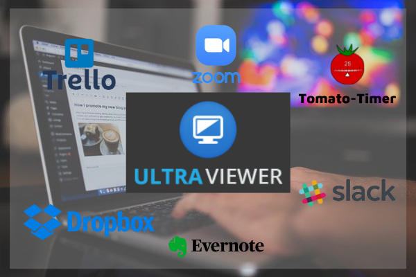
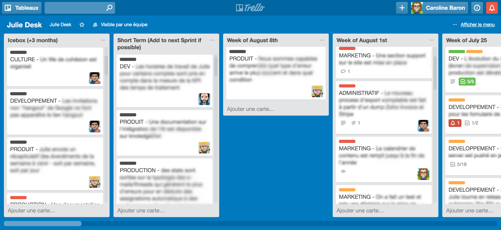
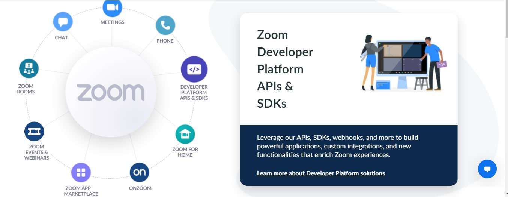
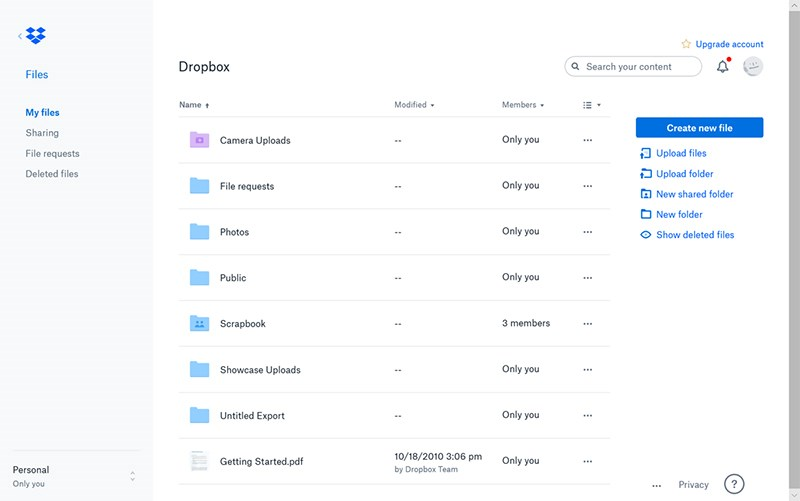
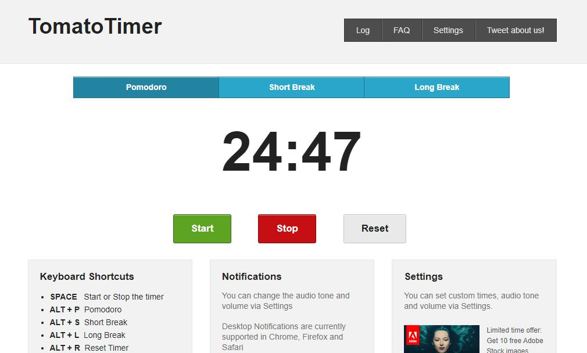
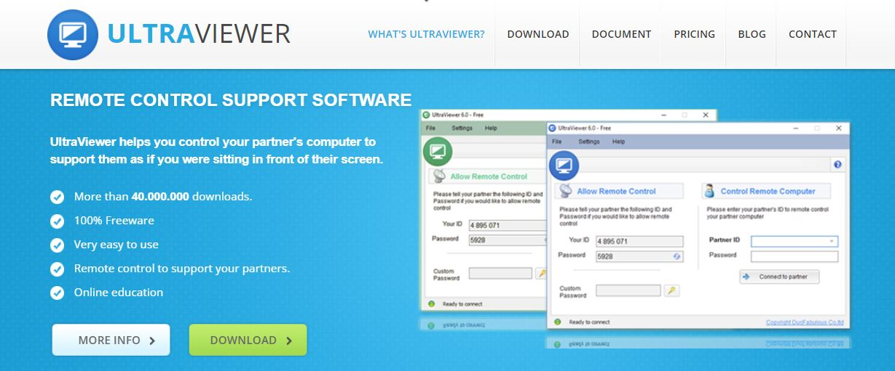

7 Essential Tools for Remote Workers
Because of the Covid-19 pandemic, you can’t come to the office and have to remotely work. Are you worried that your work process will be affected by the lack of face-to-face interaction? Here are some of the best remote working tools for teams that you can start using right away.

1. TRELLO
Trello is the visual work management tool that empowers teams to ideate, plan, manage, and celebrate their work together in a collaborative, productive, and organized way. Members participating in Trello only need to look at it to understand the whole and their work. This is a quick overview of the things you need to know when you are just getting started with your first project on Trello.

A Trello board consists of the following components:
- Board: A board is the place to organize tasks, all the little details, and most importantly and collaborate with your colleagues.
- List: List keep cards, or specific tasks or pieces of information, organized in their various stages of progress. For example: To Do - Doing - Done. There’s no limit to the number of lists you can add to a board, and they can be arranged and titled however you’d like.
- Card: The smallest unit of a board is a card which shows details of tasks and ideas that need to get done like a blog post to be written, a reminder of customer support calls or of designing a new magazine page, or company vacation policies. Just click “Add a card…” at the bottom of any list to create a new card, and give it a name.
- Menu: A menu is the mission control center for your board. The menu is where you manage members' board permissions, control settings, search cards, enable Power-Ups, and create automations. Some great advantages of Trello are easy to use, intuitive tracking, and completely free for basic features. Therefore, Trello is an effective remote working software for you.
2. ZOOM CLOUD MEETING
Zoom Cloud Meeting is the most famous and popular online conferencing software in 2021. Zoom Cloud Meeting is trusted by many companies and industries in online training activities, online seminars, and remote conferences because it is easy to use, completely free and is used on different platforms. You just need a zoom link or a Zoom ID code to be able to join the meeting room.

Some of the most exciting features of Zoom Meetings include:
- Allow sharing screen content, sharing documents, Powerpoint presentations
- HD video and audio calls
- Record the meeting to store information and allow people who cannot join the meeting online to check and review it, including those who attended.
- Create polls and collect the opinions of the participants.
- Simple interface, multi-platform support suitable for people who work flexibly and often join the meeting online
- Join from anywhere on any device like smartphones, computers or tablets
- Allow sending friend requests using Zoom via Email.
Thus, if you often have to participate in online meetings, seminars, and training, Zoom is best-known for being the go-to choice that needs access to quick and convenient video for you.
3. DROPBOX
Dropbox helps you keep all your file, photo, and video free. You can use your computer, tablet, or smartphone to view, share, edit, or download documents. It is a very popular and useful remote working tool.

The key features of Dropbox:
- It provides free storage up to 2GB on various for-fee plans.
- All stored files can be accessed easily anytime and from anywhere such as Android, iOS, Windows, Linux, macOS, ect.
- It allows you to work offline even if you lose network due to line failure or travel on the road without 3G/4G connection.
- It’s easy to restore documents if you accidentally delete thank to automatic backup feature
- Files can be marked as important files and be easily accessed quickly when needed.
- Dropbox create a free group workspace, easily discuss online, and transfer ideas with Dropbox Paper
The selective sync feature allows you to select some important folders to back up with your computer instead of selecting all of them.
4. EVERNOTE
To work remotely effectively, managing work items is extremely important. Evernote presents an indispensable note-taking management software on your device. With Evernote, you can seamlessly take notes, create ideas, and easily find information without having to worry about missing an important item.
Some features of Evernote:
- Create, organize and manage notes scientifically.
- Smart card-based search helps you find the notes you need quickly.
- Search with keywords in images, handwriting, business cards or documents, ect, thanks to its top-notch character recognition.
- Be compatible and work on all devices and many different operating systems such as: Windows, Android, IOS, Mac, Linux, ect.
- Integrate with many applications such as Google Drive, Slack, Outlook, MS Teams, Zapier and Gmail.
- Sync notes on any device so your notes can always be used, even when offline.
- The board and color system makes taking notes more efficient and easier.
- Organize important information in the sameplace.
You can use Evernote for many tasks such as: brainstorming ideas, sketching projects, taking notes online or offline. Please experience and apply it to improve work efficiency.
5. TOMATO TIMER
Tomato Timer is a tool to help support effective remote working. With Tomato Timer, you will manage your time scientifically to maximize your ability to focus and significantly improve your productivity.

The application is operated based on the principle of the Pomodoro method of concentration. First, you list the important tasks that need to be completed. Then you focus on solving for short periods of time, usually every 25 minutes. Alternating between these sessions is a 3-5 minute break time to help you recharge. As a result, your body is fresh and ready to effectively pay attention to the next short working sessions.
Possessing a simple and easy-to-use interface, Tomato Timer includes the following components:
- Pomodoro: The duration of 25 minutes
- Short Break: A 5-minute break after every Pomodoro time
- Long Break: After 4 Pomodoro times, there will be a 10-minute break
The three buttons START, STOP, RESET corresponding to three operating functions of the application are to start counting time, pausing, and resetting time.
It's now much easier to focus and get things done. Get started to practice and increase the times of pomodoros to maximize your concentration. It will greatly affect your work performance.
6. SLACK
Slack is a smart and scientific team management software. You can create private discussion topics, talk, and share your documents, and images, etc for everyone in the group quickly.
Some features from the Slack group chat tool:
- Allow operate on most popular operating systems such as macOS, Windows, Android, iOS, etc.
- Be used on computers, tablets, laptops, or smartphones. Just pre-install the app and have an internet connection.
- The storage capacity is up to 5GB, and it can be linked with other storage tools such as Google Drive, Github, Dropbox, Trello, Task Reminder, ect.
- Search users, messages or files quickly by keyword / date / time / bookmark link, ect.
- Set reminders for important items with the Slack Bot
- Change the text format to create emphasis and attract attention
- Hold meetings on topics, projects, or anything else that's important to your work.
Start a great experience with the Slack group chat app that makes working remotely more productive and enjoyable.
7. ULTRAVIEWER
UltraViewer is one of the most popular remote working software today. In recent years, UltraViewer has gradually become a popular Teamviewer alternative thanks to its outstanding advantages.

Some key features of UltraViewer to improve your remote productivity:
- Support instantly remote computer access and control.
- Connect with fast and stable speed
- Unlimited number of devices allowed to control at the same time
- Turn on the remote computer: allow you to work anywhere as long as you have an internet connection
- Transfer files easily and securely under control. Shareable file size depends on different version type.
- Share sharp and realistic images and sound - 4K Ultra HD resolution
- Record control session to watch and listen a recording as many time as you want
- Possess smart and professional chat box and friendly and easy to use interface
- Support all Windows operating systems
- High security makes the control process safe and transparent.
- Create a version with your own logo to increase corporate brand recognition.
UltraViewer is an effective remote working software that is indispensable for most computer users today. You can download UltraViewer to use completely free.
The smart and flexible combination of the above software will make working remotely easier and more enjoyable than ever. Hope you will find the right and best tool for yourself.
Read more: Why should buy an UltraViewer license?


Write comments (Cancel Reply)